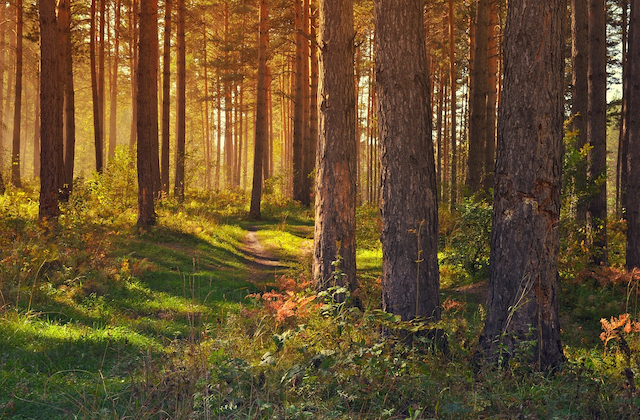

Walks
Crawford Farm Park in Scotland offers a variety of walks and trails that visitors can enjoy during their visit.
All walks cater to different skill levels and offer stunning views of the surrounding countryside.

Routes
Visitors can take a leisurely stroll around the farm park's gardens, enjoy a peaceful walk along the river, or explore the nearby woodland trails.

Guides
The park's friendly staff is happy to provide visitors with maps and recommendations to ensure that they have a memorable walking experience.